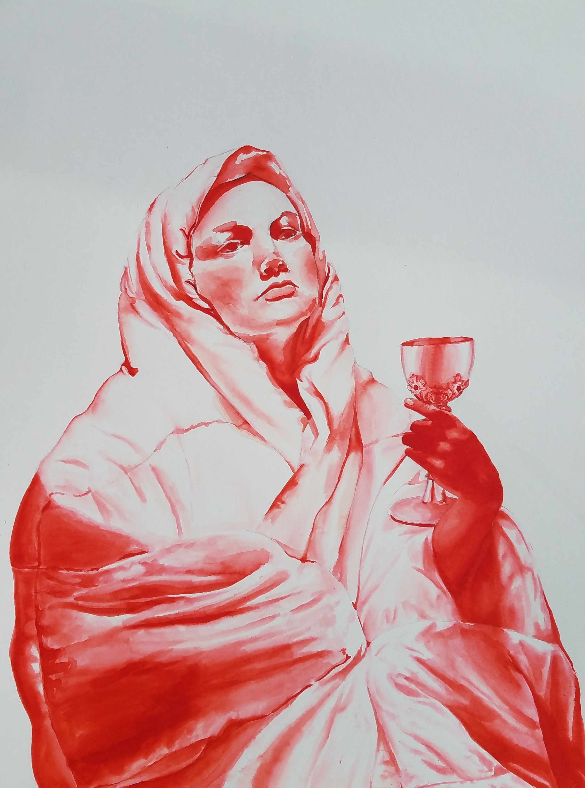

Title:
Blood is Thicker than Water
Medium:
Water-Based Ink
Description
A woman clad in a thick layer of blankets sips from a red chalise, resembling the safety of remaining with those you were raised near, but the irony relates to the medium used and how it was water-based.